Sucht und psychische Gesundheit
Organisationen, die Menschen bei der Genesung helfen, Familien unterstützen und Schaden verhindern, bevor er entsteht.
Stratos / Impact-Programm
Eine soziale Initiative von Stratos Web
Jedes Jahr bauen wir einigen gemeinnützigen Organisationen eine professionelle Website — völlig kostenlos, damit ihr digitaler Auftritt ihrer Arbeit gerecht wird.
Der Hintergrund
Stratos Web gibt es, damit ambitionierte Marken online auch ambitioniert aussehen. Dieses Programm hat aber einen ganz anderen Ursprung.
Unser Gründer hat das Impact-Programm ins Leben gerufen, weil Sucht Menschen in seinem nahen Umfeld betroffen hat. Diese Kämpfe aus der Nähe zu sehen machte ihm klar, wie wichtig Organisationen in Rehabilitation, Prävention und psychischer Gesundheit sind — und wie oft eine veraltete Website sie ausbremst, während sie Außergewöhnliches leisten.
Es ging nie nur darum, Websites zu bauen. Es geht darum, dass diese Organisationen mehr Menschen erreichen, die sie brauchen, und größere Wirkung entfalten als je zuvor.
— Das Team von Stratos Web
Fokus
Wir konzentrieren uns dort, wo gute digitale Arbeit die meisten Leben verändern kann.
Organisationen, die Menschen bei der Genesung helfen, Familien unterstützen und Schaden verhindern, bevor er entsteht.
Organisationen, die die Kinder schützen, unterrichten und unterstützen, die es am dringendsten brauchen.
Das Paket
Jede ausgewählte Organisation erhält eine vollständige, professionelle Website. Dasselbe Paket, das wir für zahlende Kunden bauen.
0 €
Null Kosten für eure Organisation. Keine versteckten Gebühren.
Für wen
Wenn eure Arbeit Menschen hilft und eine bessere Website euch helfen würde, mehr von ihnen zu erreichen, ist dieses Programm für euch.
Vorrang haben Organisationen in den Bereichen Genesung, psychische Gesundheit und Kinderschutz. Bewerben kann sich aber jede Organisation mit echter Wirkung.
Der Ablauf
Vier Schritte von der Bewerbung bis zur neuen Website.
Organisationen reichen ihre Bewerbung ein und erzählen ihre Geschichte.
Wir prüfen jede sich bewerbende Organisation sorgfältig.
Wir besprechen Bedarf, Ziele und Möglichkeiten.
Gemeinsam bauen wir einen professionellen digitalen Auftritt.
Aus dem Programm
Die Website von FICE entsteht gerade über das Impact-Programm. Dieselbe Arbeit und derselbe Maßstab wie bei jedem anderen Projekt — am Ende steht nur keine Rechnung.

Unsere Vision
Das ist keine einmalige Kampagne. In den kommenden Jahren wollen wir Dutzende Non-Profit-Websites bauen und zu stärkeren Gemeinschaften in Ungarn beitragen.
Die Grenzen
Wir schreiben das vorab, weil Enttäuschung schlimmer ist als eine Absage. Wenn einer dieser Punkte für deine Organisation ein Ausschluss ist, ist es besser, das jetzt zu wissen.
Ja, vollständig. Ausgewählte Organisationen zahlen nichts. Es gibt keine versteckten Gebühren, Lizenzkosten oder Verpflichtungen. Design, Entwicklung und Launch übernehmen wir.
Weil wir aus erster Hand gesehen haben, wie wichtig Organisationen in Rehabilitation, psychischer Gesundheit und Kinderschutz sind. Wir haben das Können zu helfen — also helfen wir.
Gemeinnützige Organisationen, die echte, messbare gesellschaftliche Wirkung erzielen und offen für Zusammenarbeit sind. Vorrang haben Organisationen in Genesung, psychischer Gesundheit und Kinderschutz.
Nur eine Handvoll pro Jahr. Wir halten die Zahl bewusst klein, damit jede Organisation volle Aufmerksamkeit und die bestmögliche Website bekommt.
Jede Organisation erhält nach dem Launch anfänglichen technischen Support. Längerfristigen Bedarf besprechen wir gemeinsam im Gespräch.
Selbstverständlich. Ob ihr bei null anfangt oder eine veraltete Seite ablösen wollt — wir bauen einen modernen, professionellen Auftritt von Grund auf.
Bewerbung
Wenn eure Organisation echte gesellschaftliche Wirkung erzielt, möchten wir eure Geschichte hören.
Verwandte Seiten und Artikel.
Wohin soll es mit deinem Unternehmen als Nächstes gehen?